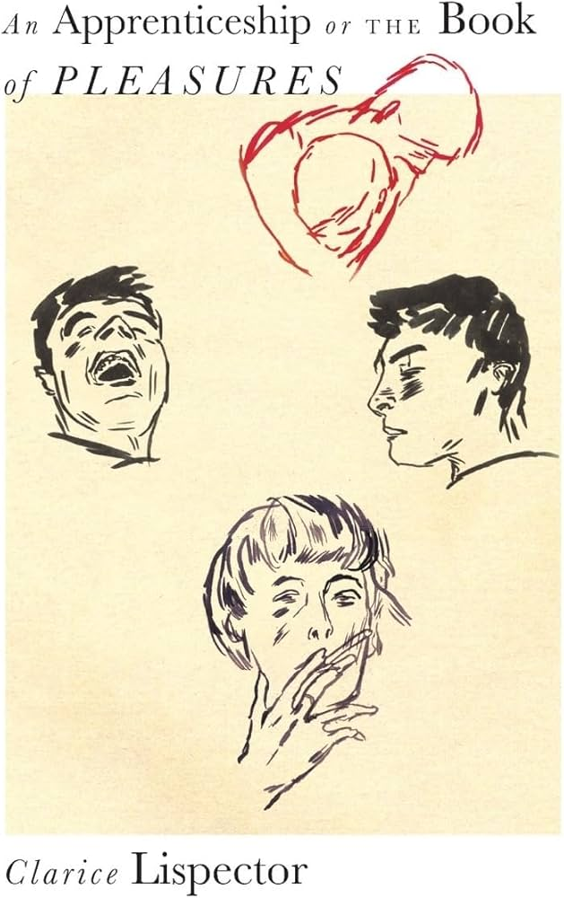
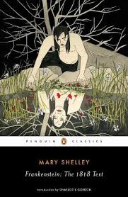
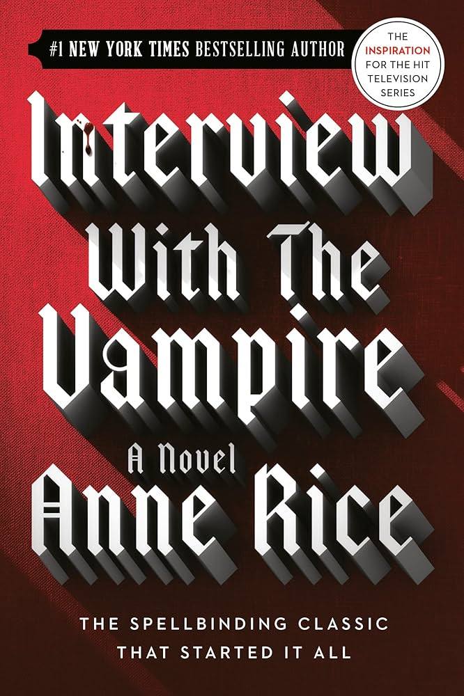
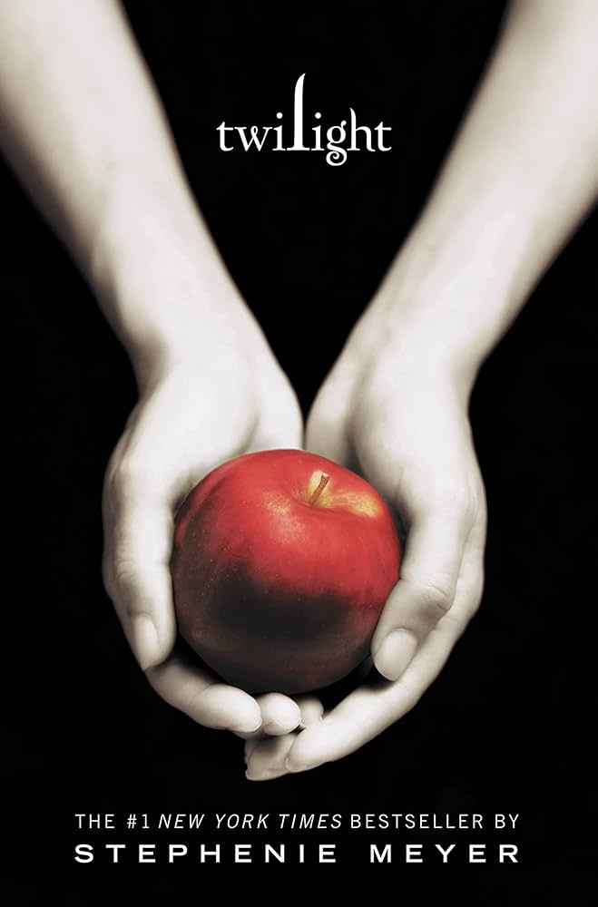
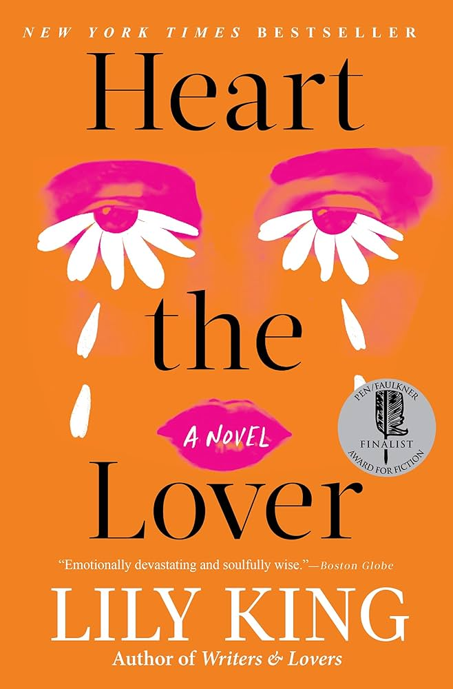

Jump to...
Favorite Books
My Journal Ecosystem
Some of my favorite books
Currently Reading: Dungeon Crawler Carl series (enjoying it so far!)
An Apprenticeship or The Book of Pleasures by Clarice Lispector I absolutely adore lispector's work, this was the first one I ever read
Agua Viva by Clarice Lispector A staple Lispector that I have no problem recommending widely

Three Body Problem by Cixin Liu AMAZING trilogy and no I cannot get into the netflix adaptation... from the few episodes I managed to watch, I don't think it's doing the books any justice.

The Dark Forest by Cixin Liu

Deaths End by Cixin Liu

Frankenstein (1818) by Mary Shelley I admit I DNF'd this a few times in the past, but then I finally got past whatever wall I hit and ended up absolutely adoring it.

Interview with A Vampire by Anne Rice I loved this one more than I expected to & I look forward to reading more Anne Rice.

Twilight by Stephanie Meyer I adore the whole trilogy. I actually completely missed the Twilight train as a tween and decided to read them all a few years ago and became obsessed... I even made book-accurate playlist that went a little viral online.
The Secret History by Donna Tartt One of those books that everyone talks about and actually lives up to the hype.
Stoner by John Williams This one also lives up to the hype. I'm also a sucker for slice of life-esque books set during wartimes... I attribute that to how much I enjoyed reading A Separate Peace in high school.

Heart the Lover by Lily King This one was a casual recommendation by a friend and it completely won me over. I especially love King's writing here.
My Journalling Ecosystem
I'm a big advocate for putting pen to paper.


Pens & Inks
I'm a proud fountain pen user! My favorites are the LAMY Safari and the TWISBI Eco in fine or extra fine. My current go-to inks:Black: Platinum Carbon Ink
Green: Platinum Forest Black
Red/Pink: Lennon Toolbar Peach Blossom
Grey/Charcoal: Ferris Wheel Press x Atlas Stationers Iron Ore